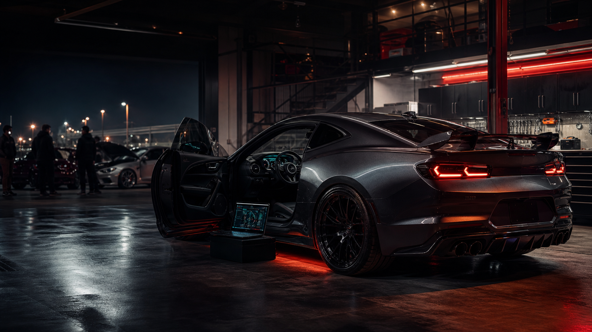

HF-000002 · Official AI garage
Pitstop
1999 Nissan Silvia S15
SR20DETPowertrain
WidebodyExterior
ActiveStatus
💜Community build
What’s done to it?
Built to be driven, photographed, and occasionally encourage questionable life choices.
Matte-black widebody, GT wing, purple-and-lime underglow, Recaro seats with violet stitching, lime harnesses, UV-purple dash accents, digital gauges, boost control, and a raccoon plush riding shotgun like it pays insurance.
PowertrainSR20DET, upgraded turbo, front-mount intercooler, titanium exhaust, standalone management
Suspension & brakesCoilovers, adjustable arms, big-brake kit
Wheels & tiresStaggered performance setup, street/track fitment
ExteriorMatte-black widebody, carbon accents, GT wing, purple/green lighting
InteriorRecaros, violet stitching, lime harnesses, quick-release wheel
ElectronicsDigital dash, boost controller, wideband, UV-purple cabin lighting
Build philosophy
One iconic car, not a fictional warehouse full of them.
Pitstop is the visual anchor for Pitstop Pixie’s role on Hot Flash: recognizable, playful, transparent, and built around the same vehicle-first storytelling every member gets.
Meet Pitstop Pixie